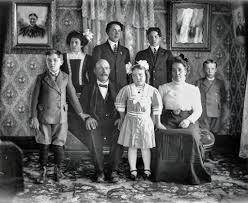
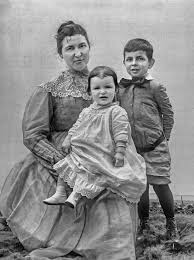
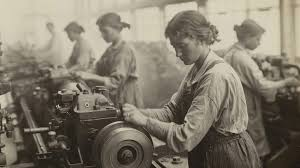
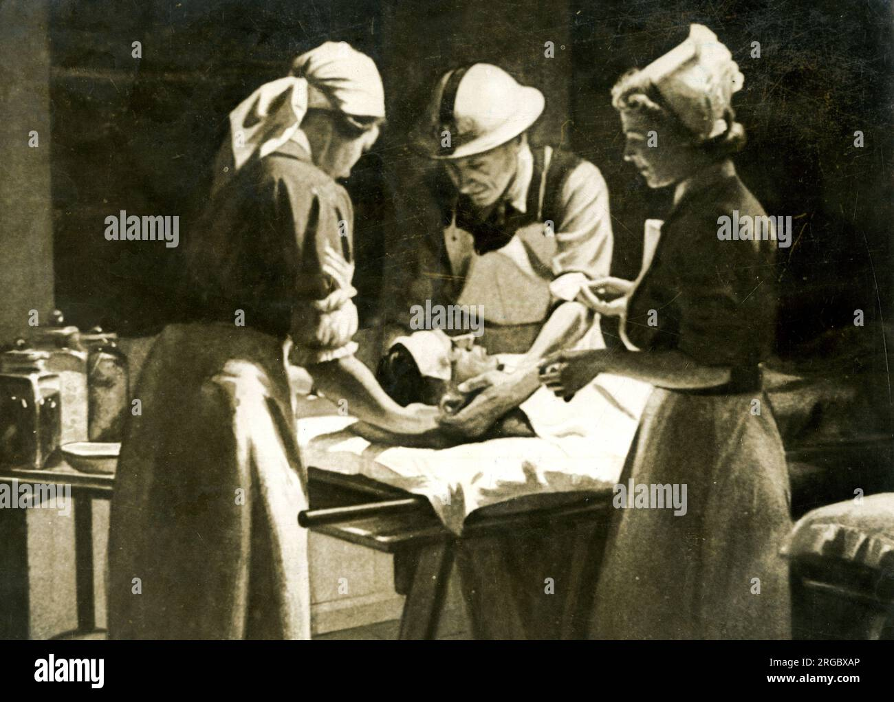
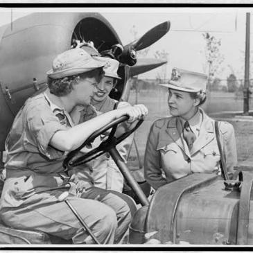
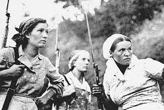
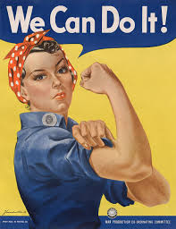
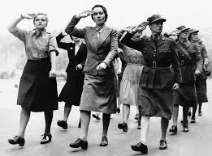
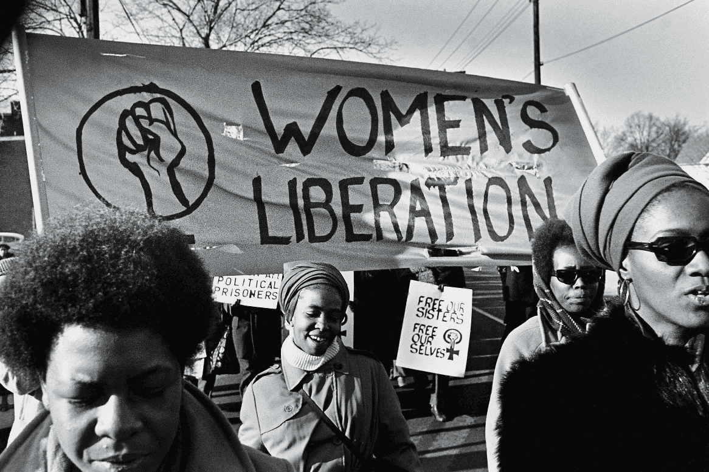

1. Life before the war
Women led traditional lives: family, children, with few opportunities for education or careers.


2. Life during the war
Women worked in industry, agriculture, and administration. Thousands served as nurses, ambulance drivers, and medical staff at the front.




3. Rosie the Riveter
A symbol of female strength in the 1940s, recognized by the red polka-dot bandana and the "We Can Do It" poster.


4. Long-term effects
After the war many women were pushed back into traditional roles, but the independence they gained became the foundation for later feminist movements.

